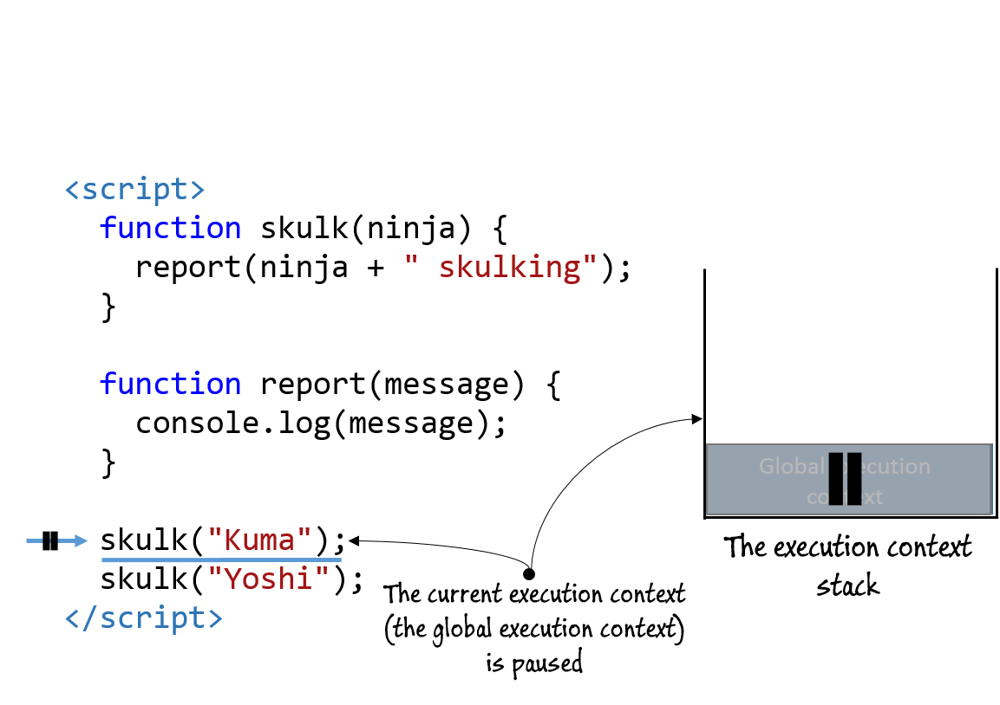
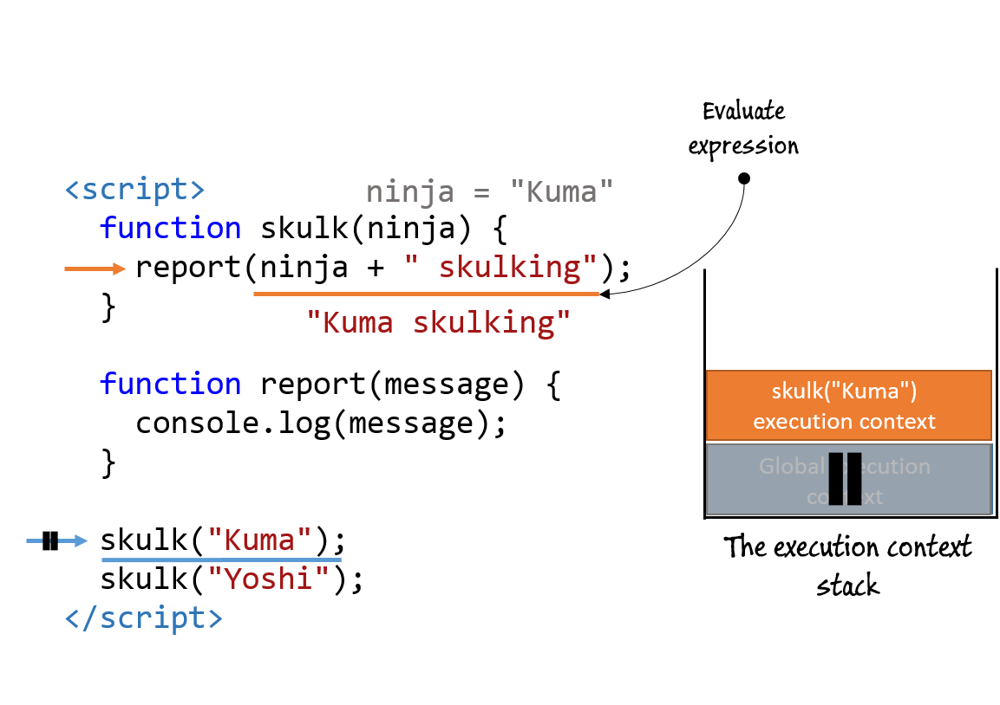
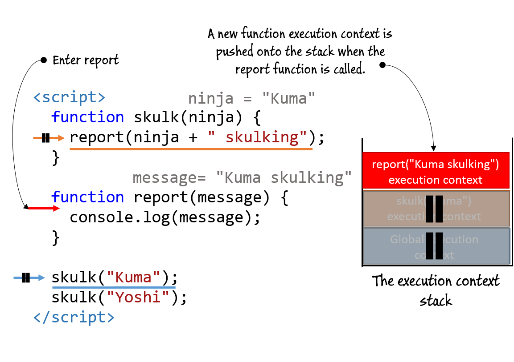
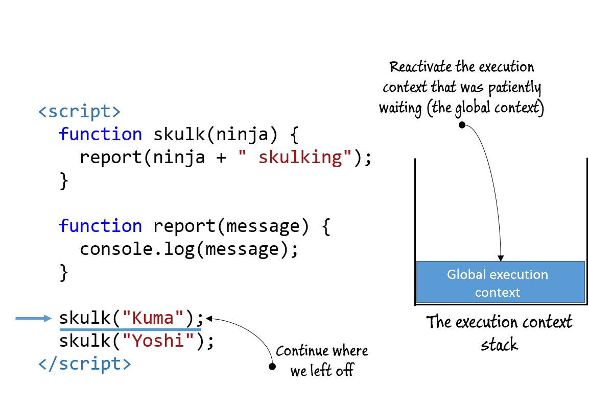
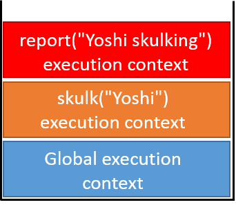

1. Code execution
In JavaScript, the fundamental unit of execution is a function. You use them all the time, to calculate something, perform side-effects such as changing the UI, to achieve code reuse, or simply to make your code a bit easier to understand. In order to fulfill its purpose, a function can call another function, which can in turn call another function, and so on. And when a function does its thing, it has to return back to the position from which it was called. But have you ever wondered how the JavaScript engine keeps track of all these executing functions and return positions?
In JavaScript, there are two different kinds of code: global code, placed outside of all functions, and function code, contained in functions. When you code is being executed by the JavaScript engine, each statement is executed in a certain execution context. And just as we have two different types of code, so do we have two different types of execution contexts: a global execution context and a function execution context. A significant difference between them is that there is only one global execution context, created when our JavaScript program starts, while a new function execution context is created on each function invocation. For example, consider the following figure in which we log the activity of a couple of sneaky ninjas.

When the JavaScript engine starts executing your JavaScript code, it creates a global execution context in which all your global JavaScript code will be executed in, even if it's spread across different script elements. In our example, even though there are two script elements, their global code is executed in the same global execution context, which is created before any JavaScript code is executed.
On the other hand, every time your code invokes a function, a new function execution context is created. In this case, this means that there is one execution context created when executing the skulk function with the argument Kumawakamaru, one when executing it with the argument Muneyoshi, and one when executing it with the argument Goemon - three different function execution contexts, one for each function invocation.
The mechanism of execution contexts is used by the JavaScript engine for two reasons: it allows us to keep track of the position in the application execution where the program flow is currently at, and it helps us deal with identifier resolution. Let's start by exploring how execution contexts are used to keep track of the application execution.
1.1 Tracking application execution with execution contexts
JavaScript is based on a single threaded execution model, which means that at a certain point in time, only one piece of code can be executing. You also know that when your JavaScript application starts, a global execution context is created in which all your global JavaScript code is evaluated.
Now, let's continue. During the course of program execution, we call a lot of functions. And each time a function is invoked, since only once piece of code can be executed at a time, we have to stop the current execution context, and create a new function execution context in which the function code will be evaluated. Once the function performs its task, its function execution context is discarded, and the caller execution context restored. So we have this need to keep track of all these execution context, both the one that is currently executing, as well as the ones that are patiently waiting. The easiest way to do this is by using a stack, the so called Execution Context stack.
NOTE
A stack is one of the fundamental data structures in which you can put new items only to the top, and when you want to take existing items you also have to do it from the top. Think of a stack of trays in a cafeteria: when you want to take one for yourself, you simply pick the one from the top, and when the cafeteria staff have a new clean one, they simply put it on the top.
Let's take a look at the following code, where we report the activity of two skulking ninjas.
The code in the previous listing is straightforward, we define a skulk function that calls the report function, which outputs a message. Then, from global code, we make two separate calls to the skulk function. Now, by using this code as a basis, we'll explore the creation of execution contexts, see the following animation.

- 

- 

- 


- 

In the beginning, the execution context stack starts with the global execution context, which is the active execution context when executing global code. In the global code, the program first defines two functions: skulk and report, and then it calls the skulk function.
Since only one piece of code can be executed at once, the JavaScript engine pauses the execution of the global code, and goes to execute the skulk function code with "Kuma" as an argument. This is done by creating a new function execution context and pushing it on top of the execution context stack. The skulk function, in turn, calls the report function with the argument "Kuma skulking". Again, since only one piece of code can be executed at once, the skulk execution context is paused, and a new function execution context for the report function, with the argument "Kuma skulking", is created and pushed on to the stack.
Once the report function logs the message and finishes its execution, we have to go back to the skulk function. This is done by simply popping the report function execution context from the execution context stack. When this has been done, the skulk function execution context is reactivated, and the execution of the skulk function continues. A similar thing happens when the skulk function finishes its execution - the function execution context of the skulk function is removed from the execution context stack, and the global execution context, that has been patiently waiting this whole time, is restored as the active execution context. With this, the execution of global JavaScript code is restored.
This whole process is repeated in a similar way for the second call to the skulk function, now with the argument "Yoshi": two new function execution contexts are created and pushed to the stack: skulk("Yoshi") and report("Yoshi skulking"), when the respected functions are called. These execution contexts are also popped off the stack, when the program returns from the matching function. The following figure shows the state of the execution context stack when logging "Yoshi skulking".
Even though the execution context stack is an internal JavaScript concept, you can explore it in any JavaScript debugger, see the following figure for how it looks like in Chrome's dev tools.

Besides keeping track of the position in the application execution, the execution contexts are vital for identifier resolution. The execution context does this via another internal JavaScript engine concept called the Lexical Environment.
2. Keeping track of identifiers with lexical environments
A Lexical environment is an internal JavaScript engine construct used to keep track of the mapping from identifiers to specific values. For example, in the following code:
var ninja = "Hatori"; console.log(ninja);
The lexical environment is consulted when our code is accessing the ninja variable in the console.log statement.
Note
You're probably familiar with the concept of scopes(just in case, a scope refers to the visibility of identifiers in certain parts of a program). You can think of lexical environments as an internal implementation of the JavaScript scoping mechanism.
Usually, a lexical environment is associated with a specific structure of JavaScript code. It can be associated with a function, a block of code, or the catch part of a try-catch statement. This means that each of these structures: functions, blocks, and catch parts can have their own separate identifier bindings.
Note
In earlier versions of JavaScript (pre-ES6), a lexical environment could only be associated with a function. This meant that variables could only be function scoped. This was a source of many confusions. Since JavaScript is a C-like language, people coming from other C-like languages (such as C++, C#, or Java) are naturally expecting that some low level concepts, such as the existence of block scopes, will be the same. With ES6 this is finally fixed.
2.1 Code nesting
Lexical environments are heavily based on the idea of code nesting, that one code structure can be contained within another code structure. For example, let's take a look at the following figure that shows different types of code nesting.

The for loop is nested within the report function, the report function within the skulk function, and the skulk function within the global code. In terms of scopes, each of these code structures gets an associated lexical environment every time such code is evaluated. For example, on every invocation of the skulk function, a new function lexical environment is created, and on each for loop iteration, a new block lexical environment is created. If you're wondering, in this case, there will be three different block lexical environments created while looping to the reportNum (don't worry, we'll see a more detailed example later on).
Now let's go through the implications of code nesting for identifier resolution. Consider a similar example in the following listing.
The previous listing shows an example in which a function report is defined within a function skulk. The interesting thing happens in the body of the report function. In the first assert statement we access the global ninja variable. This isn't anything weird, you can do the exact same thing in almost any other programming language. But now comes the interesting part. Consider the second test, where we access the variable action. If you look closely, you'll notice that the action variable is neither the variable of the report function (there is no variable declaration nor a function parameter with that name within the report function), nor a global variable. It is in fact, a variable of the skulk function. In JavaScript, variables that are accessed in the body of a function but that are neither local variables, nor function parameters are called free variables.
In terms of nesting, the code of the skulk function is nested within the global code, while the code of the report function is nested within the code of the skulk function. Since all of our code is nested within global code, from that perspective, it makes perfect sense to allow access to global variables from any part of code – that makes them global. But consider the case of the relationship: the report function contained within the skulk function. Just as we can access global variables from any part of the code, so it makes perfect sense to be able to access variables from outer functions within inner functions, regardless of the depth of nesting, since these variables are in effect “global” from the perspective of inner functions. There's nothing special about it, we've all probably written code such as this.
But how does the JavaScript engine keep track of all these variables, and what's accessible from where?
This is where lexical environments jump in.
Code nesting and lexical environments
In addition to keeping track of local variables, function declarations, and function parameters, since in inner functions we can access the variables of outer functions, the lexical environment also has to keep track of its outer (parent) lexical environment. The idea being that if the identifier cannot be found in the current lexical environment that the outer lexical environment is searched for. This stops either when the matching variable is found in this chain of lexical environments, or with a reference error if we've reached the global lexical environment and the identifier hasn't been found. Let's see an example in the following animation.
In addition to keeping track of local variables, function declarations, and function parameters, since in inner functions we can access the variables of outer functions, the lexical environment also has to keep track of its outer (parent) lexical environment. The idea being that if the identifier cannot be found in the current lexical environment that the outer lexical environment is searched for. This stops either when the matching variable is found in this chain of lexical environments, or with a reference error if we've reached the global lexical environment and the identifier hasn't been found. Let's see an example in the following figure.
We'll examine how identifiers intro, action, and ninja are resolved when executing the report function. The report function is called by the skulk function, which is in turn called by global code. Each of those execution contexts has a lexical environment associated with it that contains the mapping for all identifiers defined directly in that context. For example, the global environment holds the mapping for identifiers ninja and skulk, the environment associated with the execution of the skulk function, mapping for the identifiers action and report, and the environment associated with the execution of the report function, mapping for the intro identifier (the left-hand side of the figure).
In a particular execution context, besides accessing identifiers defined directly in the matching lexical environment, our programs often access other variables defined in outer lexical environments. For example, in the body of the report function, we access the variable action of the outer, skulk function, as well as the global ninja variable. To do this we have to somehow keep track of these outer environments. JavaScript does this by taking advantage of functions as first-class objects.
Whenever a function is created, a reference to the lexical environment in which the function was created is stored in an internal (meaning that you cannot access or manipulate it directly) property named [[Environment]] (this is the notation that we'll use to mark these internal properties). In our case, the skulk function will keep a reference to the global environment, and the report function to the skulk environment.
Note This might seem a bit odd at first – why don't we just traverse the whole stack of execution contexts and search their matching environments for identifier mappings? Technically, this would work in our current example, but remember, in JavaScript, functions can be passed around as any other objects, which means that the position of function definition and the position from where the function is executed, are generally not related. We'll look into this case with all the benefits and shortcomings later in this chapter.
Whenever a function is called, a new function execution context is created and pushed onto the execution context stack. With it a new associated lexical environment is created. Now comes the crucial part, as the outer environment of the newly created lexical environment, the JavaScript engine, puts the environment referenced by the called function's internal [[Environment]] property – the environment in which the now called function was created! In our case, when the skulk function is called, the outer environment of the newly created skulk lexical environment becomes the global environment, since this was the environment in which the skulk function was created in. Similarly, when calling the report function, the outer environment of the newly created report lexical environment is set to the skulk environment.
Now take a look at the report function. When the first assert statement is being evaluated, we have to resolve the identifier intro. To do this, the JavaScript engine starts by checking the environment of the currently running execution context – the report environment. Since the report environment contains the intro binding, the identifier is resolved. Next, the second assert statement has to resolve the binding for the action identifier. Again, the environment of the currently running execution context is checked. However, this time around, the report environment does not contain the binding for the action identifier, so the JavaScript engine checks the outer environment of the report environment – the skulk environment. The binding exists and the identifier is resolved. A similar process is followed when trying to resolve the ninja identifier (a little hint, the binding can be found in the global environment).
Closures
Succinctly put, a closure is a mechanism that allows a function to access all variables, as well as other functions, that are in scope when the function itself is created.
That may seem rather intuitive until you remember that a declared function can be called at any later time, even after the scope in which it was declared has gone away.
This concept is probably best explained through code, so let's start small with the following listing.
In this code example, we declare a variable and a function in the same scope—in this case, the global scope. Afterwards, we cause the function to execute.
As can be seen in figure 5.11, the function is able to "see" and access the outerValue variable. You've likely written code such as this hundreds of times without realizing that you were creating a closure!
Not impressed? Guess that's not surprising. Because both the outerValue and the outerFunction are declared in global scope, that scope (which is actually a closure) never goes away (as long as the page is loaded), and it's not surprising that the function can access the variable because it's still in scope and viable. Even though the closure exists, its benefits aren't yet clear.
Let's spice it up a little in the next listing.
Let's over-analyze the code in innerFunction() and see if we can predict what might happen.
The first assert is certain to pass: outerValue is in the global scope and is visible to everything. But what about the second?
We're executing the inner function after the outer function has been executed via the trick of copying a reference to the function to a global reference (later). When the inner function executes, the scope inside the outer function is long gone and not visible at the point at which we're invoking the function through later.
So we could very well expect the assert to fail, as innerValue is sure to be undefined. Right?
How can that be? What magic allows the innerValue variable to still be "alive" when we execute the inner function, long after the scope in which it was created has gone away? The answer, of course, is closures.
When we declared innerFunction() inside the outer function, not only was the function declaration defined, but a closure was also created that encompasses not only the function declaration, but also all variables that are in scope at the point of function definition.
When innerFunction() eventually executes, even if it's executed after the scope in which it was declared goes away, it has access to the original scope in which it was declared through its closure.
Let's take a deep look at what exactly is going on during the execution of the program in the next figure.
Every time when a JavaScript application starts its execution, a global execution context, in which all global code will be executed is created. With it, the JavaScript engine creates the matching global environment, which keeps track of global identifiers. In this case, we have three global identifiers: two standard variables outerValue and later, and a function called outerFunction. Figure 5.13, shows the values of these identifiers before calling the outerFunction. The outerValue variable references a string "ninja", the later variable is undefined, and the outerFunction identifier references the function outerFunction.
We've already discussed how every created function has an internal [[Environment]] property that references the lexical environment in which it was created. So in global code, we've defined the outerFunction, which as its environment has the global environment.
Whenever a function is called, a new function execution context is created and pushed to the top of the execution context stack. With it, a new function lexical environment that keeps track of function's local identifiers: innerValue and innerFunction, is also created - the outerFunction environment. As we've already mentioned, every function lexical environment has a reference to its outer environment (to implement nesting), and the reference to the outer environment is obtained by checking the [[Environment]] property of the called function. In this case, we are calling the outerFunction, so its internal [[Environment]] property is used as the outer environment of the outerFunction environment. Nothing special to it, yet.
During the execution of the outerFunction, a new innerFunction is created, and its [[Environment]] is set to the outerFunction environment (since this is the environment in which the function was created). The last assignment in the outerFunction, assigns the innerFunction to the variable later. Referencing the variable later, triggers the search for it. First the current lexical environment - outerFunction environment is searched. Since this environment doesn't have a mapping for that environment, its outer lexical environment is checked - the global environment. The global environment has a mapping for the later identifier and a reference to the innerFunction is stored in it (see figure 14).
An interesting thing happens when we exit the outerFunction, see the following figure.
Every time when the program flow exits a function, the execution context of that function is popped from the execution context stack, so that the execution of the caller function can be continued. Normally, this also leads to the removal of the matching lexical environment. In our case, the removal of the outerFunction execution context would lead to the removal of the outerFunction environment. However, this will not happen, because the outerFunction environment is kept alive because it is the environment of the innerFunction, and the innerFunction is kept alive because it is referenced by the global later variable.
Another interesting thing happens when we call the function referenced by the later global variable - the innerFunction, see the following figure.
Figure 5.16 The state of the application when executing the innerFunction (through the later() call).
When we call the innerFunction through the reference to the variable later, a new function execution context is created and pushed to the top of the execution context stack, the innerFunction execution context. With it, a new lexical environment, the innerFunction environment is created. Since we are calling the innerFunction, as the outer environment of the new innerFunction environment, we set the environment in which the innerFunction was created - the outerFunction environment.
Now we have everything we need to perform identifier resolution within the body of the innerFunction. The first identifier is the outerValue identifier. Since there is no identifier with that name in the innerFunction environment, first its outer environment is searched – the outerFunction environment. This environment also doesn't have a mapping to the identifier outerValue, so its outer environment - the global environment - is also searched. This time around, the global environment does contain the mapping to the outerValue and the value "ninja" is returned. The next referenced identifier is the innerValue identifier. Again, first we check the current environment - the innerFunction environment. Since it doesn't contain the mapping, its outer environment is searched and the mapping for the innerValue identifier and the value "samurai" is found in the outerFunction environment.
And that's all there is to the concept of closures - they are a mechanism that make sure that a function can access all variables that are in scope in the moment the function is created. Since in JavaScript, scoping is implemented through lexical environments, a closure simply means that a lexical environment, and all variables defined in it is kept alive as long as someone references it, either another environment through its outer reference, or a function created in the lexical environment through its internal [[Envirnonment]] property.
In the next chapter we'll take a closer look to all wonderful, practical usages of closures, but for now we would like you to notice one downside of closures. With closures, the whole environment accessible at the moment when a function is created (yes, that even includes the environments accessible by following the outer references) is kept alive for as long as the function itself is alive! Sure, some JavaScript engines could optimize a bit and save only the variables explicitly referenced by the function, and not the whole environment; but that's not something to count on. For example, figure 5.14 also shows the state of the application when the program flow exits the innerFunction. Notice how the outerFunction environment is kept alive even after we've exited the innerFunction, because the innerFunction is still accessible through the global variable later. The only way to allow the JavaScript engine to free up the memory reserved for the outerFunction environment is to remove the reference to the innerFunction by reassigning (or deleting) the global variable later. This is something that you should keep in mind when developing complex JavaScript applications.